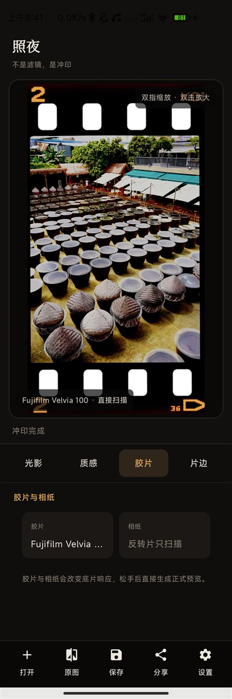

蓝奏云
固定文件夹分享，密码 23nt。
打开蓝奏云ANDROID SPECTRAL DARKROOM
照夜把真实的胶片响应、显影与相纸曲线搬进手机。 同一张照片，沿光谱一路曝光、显影、扫描，而不是盖一层预设颜色。

DOWNLOAD
蓝奏云、百度网盘和 GitHub 是同一个签名版本。下载后覆盖安装即可。
固定文件夹分享，密码 23nt。
打开蓝奏云提取码 h1ec，适合已有百度网盘客户端的用户。
打开百度网盘GitHub 正式 Release 中的 arm64-v8a 安装包。
下载 GitHub APK62a1893355fca82df05dedeb42857424b8c65574712974e6add1003cf16f144c
CHANGELOG ARCHIVE
最新版本在最左边。手机可以左右滑动，桌面可用箭头翻阅。
ABOUT ZHAOYE
照夜，取自唐玄宗的名马「照夜白」。这间手机暗房也得先把光放进去，影才会浮出来。
签名证书 SHA-256：c4b5c76576838005bf90de0a55331341d9b3132e0ace0077a581385f3b43ca65